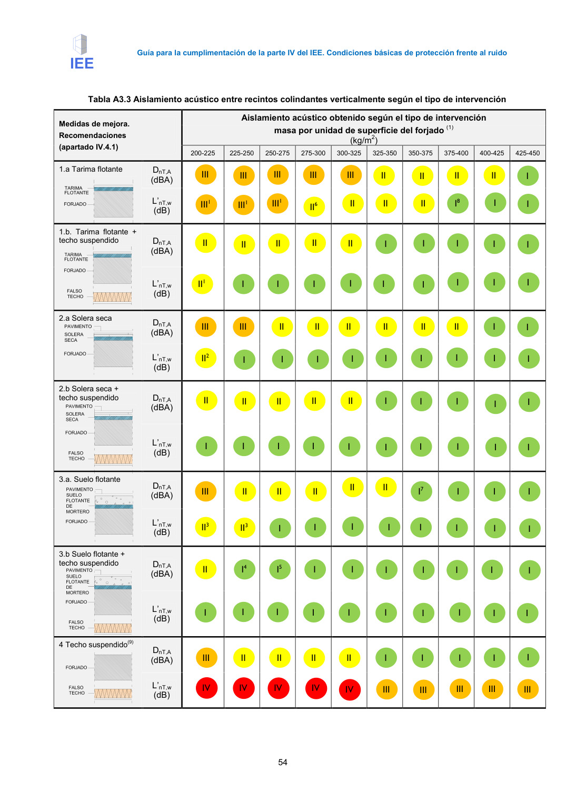

IEE 2016 · edición 2016-11-01 · capa guia
Documento GUIA-PDF-a5d4ef5252ba · SHA-256 del PDF 813669d3066c0ff79457d57b80b0512a4fbb248bc5db1f7baf473c369a064738
Página física 64 de 65.
Copia fiel del PDF fuente · Fuente oficial
Ficha de la disposición en la fuente oficial
Créditos y autoría en el PDF fuente. Reproducción con cita de fuente y autores.
Permiso literal: Se permite la reproducción del contenido total o parcial de esta Guía siempre y cuando se haga citando la fuente original.
Guía para la cumplimentación de la parte IV del IEE. Condiciones básicas de protección frente al ruido
Dirección y coordinación
Luis Vega Catalán
Mª Cristina Colomo Fernández
Eduardo González de Prado
Dirección General de Arquitectura, Vivienda y Suelo. Ministerio de Fomento
Mª Teresa Carrascal García
Instituto de Ciencias de la Construcción Eduardo Torroja. IETcc- CSIC
Autores
Mª Teresa Carrascal García
Amelia Romero Fernández
Mª Belén Casla Herguedas
Unidad de Calidad en la Construcción del Instituto de Ciencias de la Construcción Eduardo Torroja IETcc- CSIC
Se agradece la colaboración de
Belén Delgado Giménez
Fundación FIDAS
Alberto Esteban González
C.T.O. Estudios y proyectos – Gikesa
Giovanni Muzio
C.T.O. Estudios y proyectos
Francisco Labastida Azemar
Arquitecto, asesor CSCAE
Pedro F. Nogueira López
Universidad de A Coruña
Alejandro Sansegundo Sierra
Acústica SanSegundo
Esta Guía para la cumplimentación de la parte IV del IEE. Condiciones básicas de protección frente al ruido, nace en el marco del
convenio de colaboración llevado a cabo entre el Ministerio de Fomento y el Instituto de Ciencias de la Construcción Eduardo Torroja y
forma parte de la estrategia de este Ministerio de generar una serie de documentos de ayuda que faciliten la aplicación de la normativa
de la edificación y que en este caso concreto, ofrezca a los técnicos criterios para poder realizar una evaluación del estado inicial de las
edificaciones en lo referente a las condiciones acústicas de las viviendas existentes y plantear medidas que incrementen su confort
acústico.
En la redacción de este documento se ha utilizado algunos de los contenidos y de las figuras de la Guía de aplicación del DB HR
Protección frente al ruido. Dicha guía puede consultarse en:
http://www.codigotecnico.org/index.php/menu-documentos-complementarios/menu-guia-aplicacion-db-hr
Se permite la reproducción del contenido total o parcial de esta Guía siempre y cuando se haga citando la fuente original.
2Formato: Texto de la página (Markdown)
Guía para la cumplimentación de la parte IV del IEE. Condiciones básicas de protección frente al ruido 54 Tabla A3.3 Aislamiento acústico entre recintos colindantes verticalmente según el tipo de intervención Medidas de mejora. Recomendaciones (apartado IV.4.1) Aislamiento acústico obtenido según el tipo de intervención masa por unidad de superficie del forjado (1) (kg/m2) 200-225 225-250 250-275 275-300 300-325 325-350 350-375 375-400 400-425 425-450 1.a Tarima flotante DnT,A (dBA) L’nT,w (dB) 1.b. Tarima flotante + techo suspendido DnT,A (dBA) L’nT,w (dB) 2.a Solera seca DnT,A (dBA) L’nT,w (dB) 2.b Solera seca + techo suspendido DnT,A (dBA) L’nT,w (dB) 3.a. Suelo flotante DnT,A (dBA) L’nT,w (dB) 3.b Suelo flotante + techo suspendido DnT,A (dBA) L’nT,w (dB) 4 Techo suspendido(9) DnT,A (dBA) L’nT,w (dB) I I I I I I I I I I I I II I I I I I I I I I I I II I8 I I II I I I I I I I I I I I7 I I I II I I II II II II II I I II I I I I I I II I I I II I I II I III III III III III II6 III1 III1 III1 II1 I I I II II II II II III III II II II2 I I I I I I I II II II II II I I I I II I I5 I4 II3 II3 I I III II II II I I I I I II II II II III IV IV IV IV III III III III III IV

Datos candidatos: compruebe celdas y notas en el PDF.